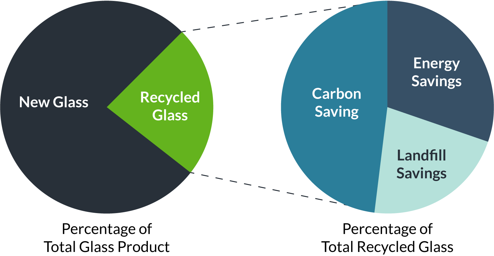
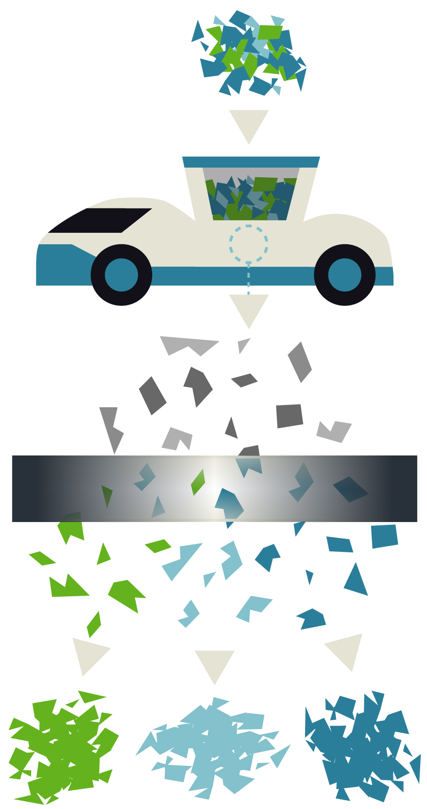
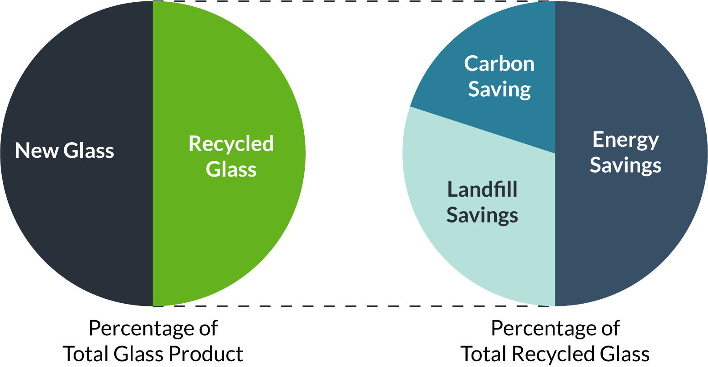

Landfills significantly contribute to worldwide pollution. Recycling initiatives have proven to limit the tonnage of garbage being placed in the earth by re-purposing the use of many materials; glass is one of these items. Additionally, by recycling more glass the requirement for sand, a limited resource, is reduced.
Current Glass Recycling Impact
The LumaSort Vertical Sorting Robot has been designed specifically to sort glass, but it has potential to do so much more.
Crushed glass of differing colors is loaded into the hopper.
The crushed glass is scanned by the integrated sensor network.
Separators respond to the sensor data and automatically sort the glass into different groups.
The result is perfectly sorted piles of glass ready to be recycled.
LumaSort will reduce the transportation costs, required sorting infrastructure, manual labor time, and high carbon emitting machinery by streamlining the entire process into one efficient robot.
Projected Glass Recycling Impact with LumaSort
With great technological requirements comes a re-visioned industry ripe for innovation. LumaSort will be a return on both financial and economic investment that pays for itself within five years. It will automate a complex and costly affair into an efficient, clean, and environmentally impactful process at a fraction of the original cost.
Contact us to see how LumaSort can benefit you